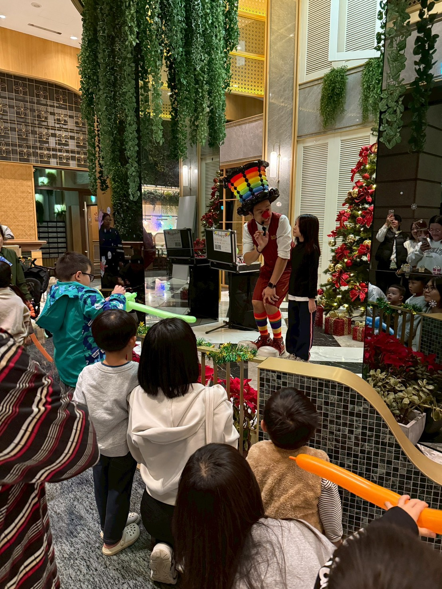
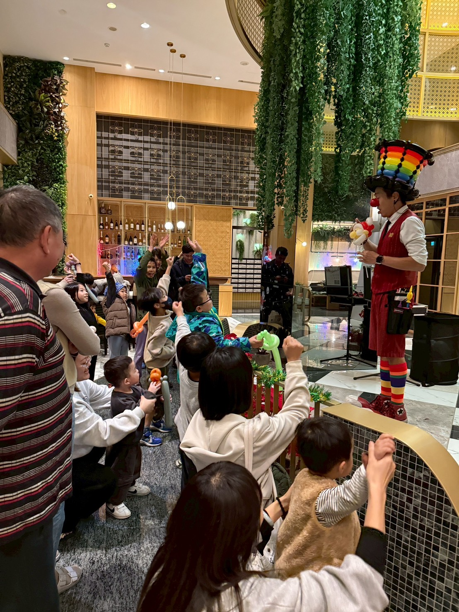
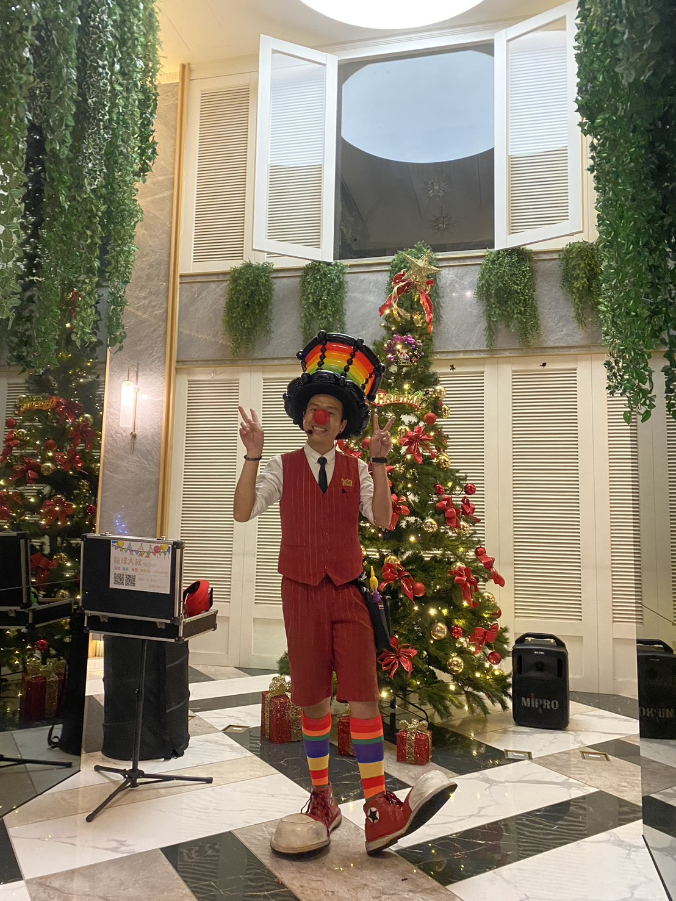

桃園楊梅聖誕晚會｜鼎藏大硯二期：氣球魔術秀 & 現場手折氣球雙重奏
青山一街的高質感聖誕夜，用精彩魔術開場，用精緻氣球留念
📍 地點：桃園市楊梅區青山一街（鼎藏大硯二期）
🎪 活動類型： 鼎藏大硯二期社區聖誕晚會
📍 地點： 桃園楊梅（青山一街生活圈）
叮叮噹！叮叮噹！隨著十二月的腳步接近，桃園楊梅也籠罩在濃濃的聖誕氣息中。這次非常開心能來到楊梅青山一街上的質感社區 鼎藏大硯二期，參與一年一度的社區聖誕晚會。本次管委會非常用心，特別安排了「氣球魔術舞台表演」搭配「現場造型氣球手折」的雙重服務，讓住戶不僅能看秀，還能把禮物帶回家！本場演出屬於氣球大叔 Sony 在 桃園楊梅社區活動 中的實際案例之一。

上半場：高互動魔術氣球秀
表演一開始，氣球大叔立刻化身孩子王！雖然是寧靜優雅的住宅區，但只要舞台燈光一亮，現場立刻變成歡樂的遊樂園。我準備了適合闔家觀賞的互動魔術與聖誕限定的造型氣球。照片中可以看到，當我問出「誰想要聖誕禮物？」的時候，台下的小朋友們幾乎是「暴動」式的舉手，那種純真的眼神與渴望，真的是身為表演者最大的成就感。

下半場：精緻手折氣球，人人有獎
舞台表演結束後，精彩的才正要開始！為了讓每位孩子都不帶著遺憾回家，我們緊接著安排了「現場折氣球」的時間。我戴上招牌的「彩虹高禮帽」，在聖誕樹旁為排隊的小朋友們客製化他們喜歡的造型。
不管是三麗鷗、寶可夢還是各種經典IP氣球，透過我快速的雙手變出來，不僅減少了家長排隊等待的時間，更讓這份歡樂能延續到家裡。這種「看得到表演，拿得到禮物」的安排，是社區活動滿意度最高的組合！

💡 關於桃園楊梅社區活動氣球表演的常見問題
- Q: 在桃園楊梅舉辦社區聖誕晚會，氣球魔術表演的場地需要如何準備？
- A: 氣球大叔 Sony 擁有豐富的桃園社區演出經驗，我們自備專業行動音響設備，不論是鼎藏大硯這類社區中庭、交誼廳還是戶外廣場，只要保留約 3x3 公尺的演出腹地，就能為住戶打造充滿歡笑的氣球魔術劇場，管委會完全不需費心準備複雜的硬體。
- Q: 社區晚會的「魔術秀加現場手折氣球」雙重服務流程通常怎麼安排？
- A: 針對社區晚會，我們強烈推薦「30 分鐘高互動舞台魔術秀 + 60 分鐘定點折氣球」的黃金組合。上半場透過魔術快速炒熱氣氛、凝聚住戶目光；下半場則在聖誕樹旁進行客製化手折氣球發送，讓每位參與的小朋友都能帶走專屬的氣球禮物，活動滿意度最高。
- Q: 現場手折氣球服務可以指定像聖誕老人或麋鹿等節慶專屬造型嗎？
- A: 當然可以！因應聖誕佳節，氣球大叔會準備多款聖誕限定造型，如聖誕老人、麋鹿、雪人等。同時我們也提供「自由點餐」服務，小朋友可以許願當紅的卡通角色或動物，透過快速精緻的職人手折技術，滿足每個孩子的期待，讓社區活動充滿驚喜。
🎈 正在尋找楊梅社區活動的最佳方案？
「魔術表演 + 氣球手折」 是社區晚會、家庭日的黃金組合！
氣球大叔 Sony 長期深耕大桃園地區，提供 楊梅社區晚會表演、氣球定點發送服務、社區節慶魔術互動 等多元方案。我們熟悉楊梅青山一街周邊社區的場地特性，能為您規劃最流暢的活動動線。
- 雙重享受方案：30分鐘舞台秀 + 60分鐘定點折氣球（推薦！）
- 節慶專屬造型：聖誕節、萬聖節、中秋節主題氣球製作。
- 專業互動引導：讓害羞的小朋友也能開心參與。